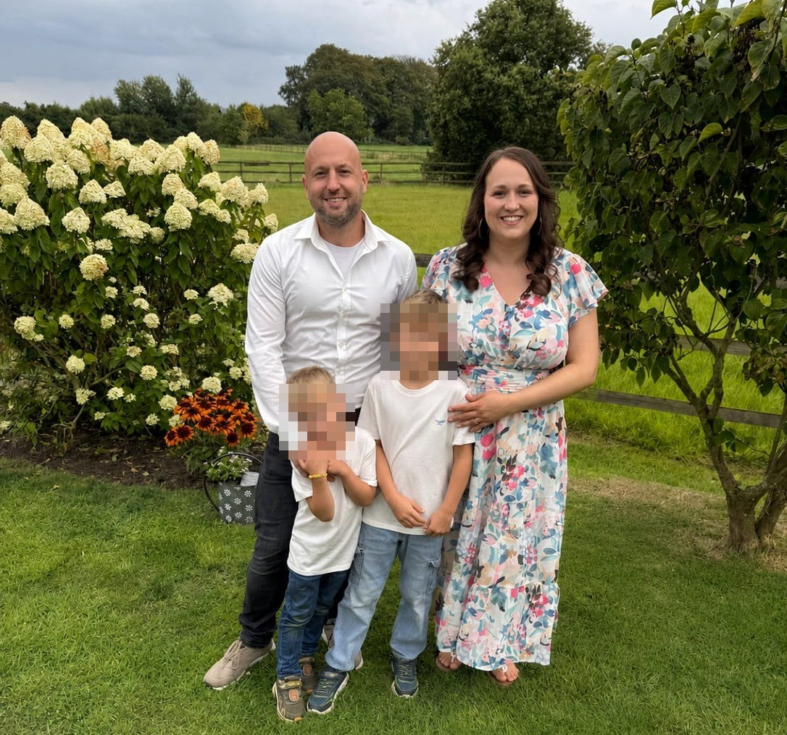
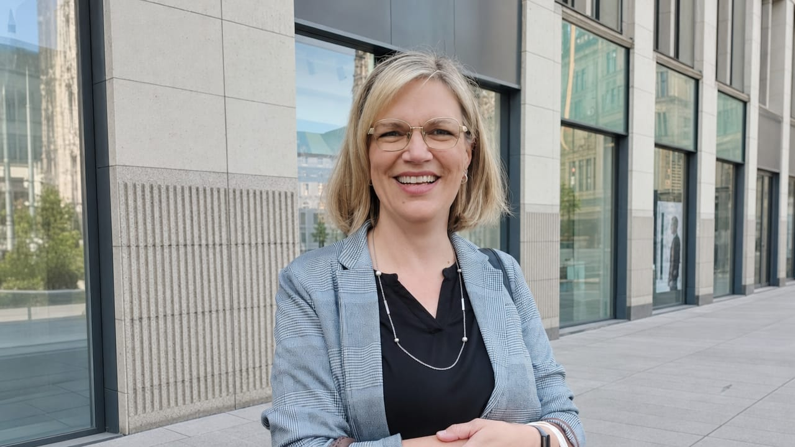
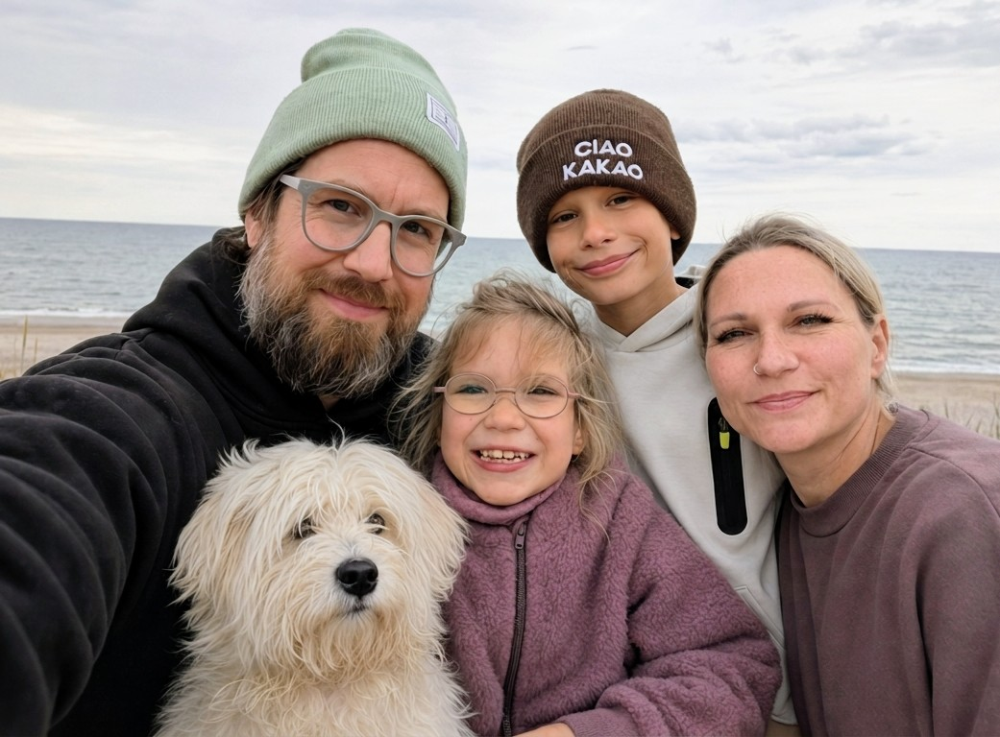

Wir sind Nachbarinnen und Nachbarn aus dem Neubaugebiet Finkenweg Nord in Geesthacht. Keine professionellen Aktivisten – sondern Menschen, die ihr Zuhause und ihre Lebensqualität schützen möchten.
Wir haben in Geesthacht gebaut und gekauft, weil es hier schön ist: ruhig, grün, familienfreundlich. Wir sind Eltern, Rentner, Berufstätige – Menschen, die hier ihren Alltag leben und ihre Zukunft gesehen haben.
Als wir von den Plänen für ein Rechenzentrum direkt neben unserem Wohngebiet erfahren haben, haben wir uns informiert. Was wir gefunden haben, hat uns besorgt – nicht wegen mangelnder Offenheit gegenüber Neuem, sondern wegen konkreter, belegbarer Fakten.
Deshalb haben wir diese Bürgerinitiative gegründet: um zu informieren, zu vernetzen, und gemeinsam mit einer Stimme zu sprechen.
Wir glauben, dass es geeignetere Standorte gibt – und dass die Stadt Geesthacht und die zuständigen Behörden die rechtlichen Rahmenbedingungen vollständig prüfen müssen, bevor Fakten geschaffen werden.
Die Menschen hinter dieser Initiative – wir stellen uns vor.

2016 sind meine Frau und ich von Hamburg nach Geesthacht gezogen — ein bewusster Schritt weg von der Großstadt, hin zur Ruhe und zur Elbe. Aus dem Mietleben wurde Heimat, aus Heimat wurde ein eigenes Haus im Neubaugebiet Finkenweg Nord. Hier haben wir gebaut. Hier gehören wir hin.
Mit unseren Söhnen hat sich ein weiterer Traum erfüllt. Raus aus der Stadt, weg vom Lärm — einen Fuß vor die Tür, das freie Feld vor sich. Jederzeit. Es ist ihr Ausgleich.
Wir haben viel Energie in dieses Zuhause gesteckt — und wir wussten bei unserer Entscheidung um alles, worauf wir uns einlassen.
Was wir nicht wussten: dass plötzlich direkt neben unserem Wohngebiet Pläne für ein dauerhaft lärmendes Rechenzentrum entstehen würden.
Es ist ein Gefühl der Ohnmacht, wenn Menschen, die woanders leben, Entscheidungen treffen, die das Leben hier auf den Kopf stellen könnten.
Wir haben in Geesthacht investiert — mit Herzblut und Geld. Jetzt wünschen wir uns, dass unsere Stadt auch in uns investiert.

2013 bin ich nach Geesthacht gezogen — wegen der Ruhe, wegen der Natur, wegen einer Stadt, in der man noch durchatmen kann. Über zehn Jahre später bin ich ins Neubaugebiet Finkenweg Nord gezogen. Und plötzlich hatte ich Hasen und Rehe vor der Tür auf dem Feld, manchmal ein Fasan oder ein Reiher. Genau das könnte jetzt verschwinden.
Direkt neben unserem Wohngebiet gibt es Pläne für ein riesiges Rechenzentrum — Kühlanlagen rund um die Uhr, Flutlicht die ganze Nacht, Lärm wo heute Stille ist. Die Rehe auf dem Feld werden verschwinden. Und mit ihnen das, was diesen Ort ausmacht.
Ich bin seit über zehn Jahren in Geesthacht. Ich weiß, was dieser Ort bedeutet. Und genau deshalb bin ich hier.

Wir sind die Bergers – Christian, Kamila, Gabriel, Merle und unser Hund Monti. Für uns war der Umzug von Hamburg nach Geesthacht mehr als ein Ortswechsel – es war eine Entscheidung für unsere Tochter Merle. Und ausgerechnet die Ruhe, wegen der wir hergezogen sind, steht jetzt auf dem Spiel.
Bei der Wahl unseres Zuhauses stand vor allem unsere Tochter Merle im Mittelpunkt. Aufgrund ihrer seltenen Erkrankung reagiert sie besonders empfindlich auf Geräusche. Was für andere Menschen vielleicht nur ein störendes Hintergrundgeräusch ist, kann für Merle zu einer enormen Belastung werden.
Deshalb haben wir ganz bewusst nach einem ruhigen und möglichst geräuscharmen Wohnumfeld gesucht, welches gleichzeitig in der Nähe der Hachede-Förderschule liegt. Wir hatten das Gefühl, hier genau den richtigen Ort für Merle und unsere Familie gefunden zu haben.
Umso mehr beschäftigt und beunruhigt uns die Planung eines großen Rechenzentrums in unmittelbarer Nähe unseres Zuhauses. Dauerhafte Geräusche durch Kühlanlagen und andere technische Einrichtungen wären für Merle nicht einfach nur störend – sie könnten ihren Alltag und damit auch unser gesamtes Familienleben erheblich beeinträchtigen.
Wir wissen nicht, ob wir das verhindern können. Aber wir können nicht einfach nichts tun.
Wir sind nicht grundsätzlich gegen ein Rechenzentrum. Aber wir sind davon überzeugt, dass ein solches Vorhaben an einen Standort gehört, an dem die Lebensqualität der unmittelbar angrenzenden Anwohner nicht gefährdet wird.
Für uns geht es deshalb nicht nur um ein Bauprojekt. Es geht um unser Zuhause – und um einen Ort, an dem sich unsere Tochter sicher und wohlfühlen kann.
Diese Initiative lebt von der Beteiligung. Du musst nichts Besonderes können – jede und jeder kann helfen: durch Weitersagen, durch Teilnahme an Versammlungen, durch das Einbringen von Ideen oder einfach durch eine E-Mail-Adresse auf unserer Vormerkliste.
Jetzt vormerken lassen